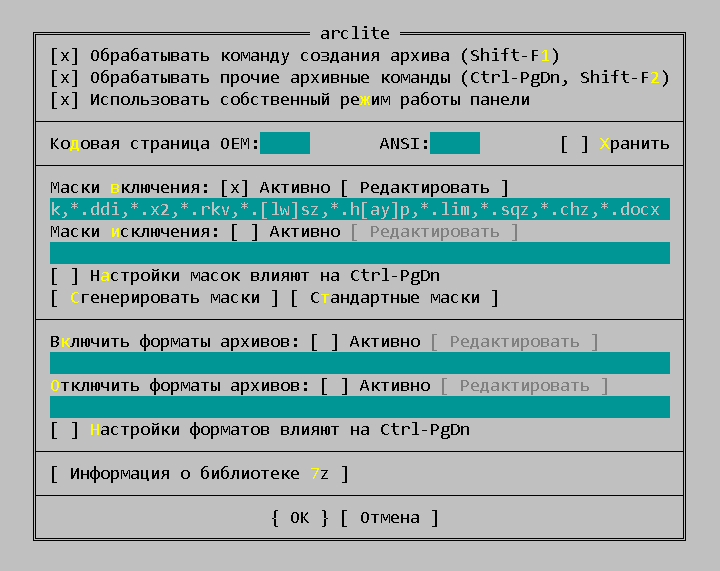
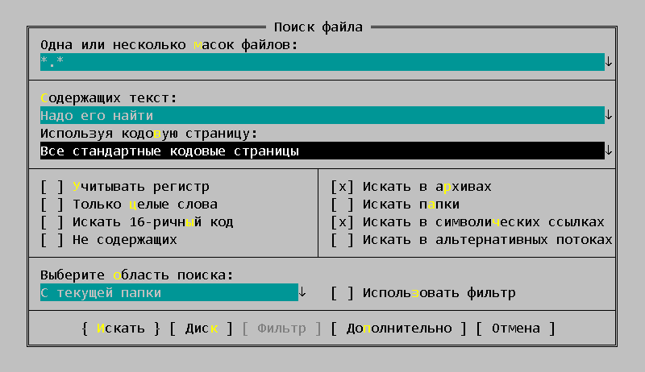

Известно, что FAR хорошо ищет текст в файлах Word и Excel (*.doc/*.xls), если включить опцию поиска "Все стандартные кодовые страницы". При этом происходит простой поиск по содержимому файла, и он работает, искомая строка находится.
Однако для новых ООО-форматов docx и xlsx такой простой поиск не работает. Это происходит по причине того, что данные форматы представляют из себя, по сути, zip-архивы с набором файлов. И в явном виде найти текст в коде zip-файла невозможно.
Чтобы заработал поиск внутри файлов docx и xlsx без всяких дополнительных установок плагинов, нужно сделать две вещи:
1. Показать Far-менеджеру, что docx/xlsx - это архивы. Для этого надо зайти в меню Параметры -> Параметры плагинов -> arclite. Данный плагин идет во всех сборках 3-го FAR по умолчанию. В поле "Маски включения" надо добавить:
,*.docx,*.xlsx
Выглядит это вот так:

2. Поставить галку "Искать в архивах" в окне поиска, там же поставить опцию "Все стандартные кодировки":

Все, после этого будет работать поиск внутри docx/xlsx.
Но есть одна особенность. Поиск будет работать только при поиске по маске имени файла "*.*", и не будет работать, например, по маске "*.docx". Связано это с тем, что внутри docx-файла (по сути, внутри zip-архива) находится структура из xml-файлов. И файл, который содержит текст документа называется document.xml.
Поэтому, если нужно что-то найти в doc/docx-файлах, надо искать по маске:
*.doc*,document.xml
При этом следует учитывать, что будет происходить поиск не только в doc/docx-файлах, но и будет происходить поиск внутри всех типов архивов, ведь, согласно пункту 2, была установлена галка "Искать в архивах".